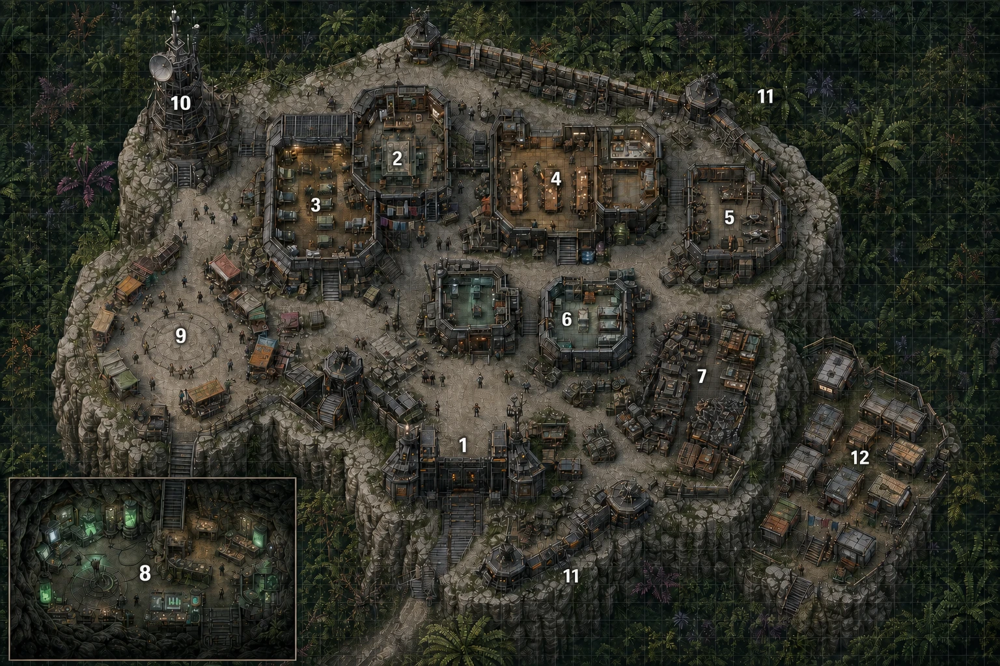
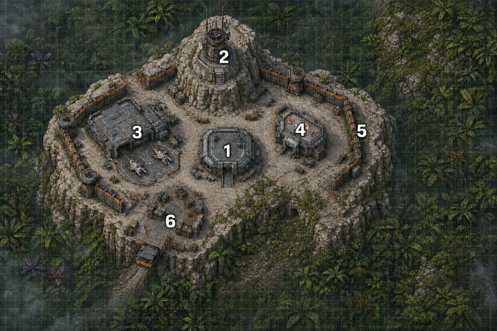

Esta ayuda puede compartirse con los jugadores sin problema. No contiene rutas tácticas, despliegues ni ningún secreto de la trama.
Descargar hoja imprimible para jugadores

| Nº | Zona |
|---|---|
| 1 | Acceso principal y control |
| 2 | Administración y dependencias de mando |
| 3 | Barracones y alojamiento |
| 4 | Comedor, cantina y espacios comunes |
| 5 | Taller de drones y equipo ligero |
| 6 | Enfermería y atención técnica |
| 7 | Taller pesado, recuperación y almacenes |
| 8 | Laboratorio excavado en la roca |
| 9 | Plaza del portal y mercado |
| 10 | Torre de comunicaciones |
| 11 | Torres y posiciones defensivas |
| 12 | Módulos de corporaciones visitantes y contratistas |
Esta distribución fija las funciones principales del Puesto. Las divisiones interiores, dependencias menores y ocupación concreta pueden adaptarse a las necesidades de la campaña.

| Nº | Zona |
|---|---|
| 1 | Módulo de mando |
| 2 | Torre de comunicaciones |
| 3 | Taller y hangar de drones |
| 4 | Enfermería y refugio |
| 5 | Perímetro principal |
| 6 | Plataforma de suministros |
Este mapa muestra únicamente las zonas que la guarnición conoce de antemano. Si en tu mesa los personajes descubren algo más sobre Punta de Lanza B durante la partida, es el Narrador quien decide cuándo y cómo revelarlo — no está marcado aquí.